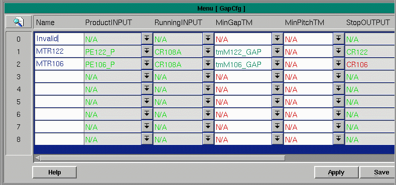

Gap Points
The menu Gap Cfg allows configuration of the minimum pitch (distance from nose to nose), and minimum gap (distance between product), at locations on the conveyor where it is necessary to establish a minimum gap. Timers are used to regulate these quantities. The timers are active while the conveyor is running. If either the gap or pitch is under the allowable amount, the product is held until the timers time out, creating sufficient gap.

Fields:
Name - a string of characters that uniquely describe this gap configuration location
Product INPUT - a pull-down into the parts database from which to select the device signaling presence or product.
Running INPUT - a pull-down into the parts database from which to select the motor or motor aux that is responsible for running this section of conveyor.MinGapTM - a pull-down into the timer menu. Select or configure a timer for a minimum gap.
MinPitchTM - a pull-down into the timer menu. Select or configure a timer to determine acceptable pitch (nose to nose distance).
StopOUTPUT - a pull-down into the parts database from which to select the device that an action will be taken upon if the gap or pitch is insufficient.
StopACTION - a pull-down into the Response Type menu from which to select a response to be taken upon the Stop OUTPUT device to stop products with insufficient gap.
StopBIT - determines which of the disabled bits will be set to stop
StopFLAG - automatically set. If set by the code, then the Stop ACTION will be taken.
NoseTooSoon - automatically set. If set to a 1 by the code, the product is held until the timers are done.
Max BlockTM - a pull-down into the timer menu from which to select or configure a timer that will cause product to be held and the timers to reset, creating a minimum gap.
Copyright © 2001 Fortna Inc. All rights reserved.